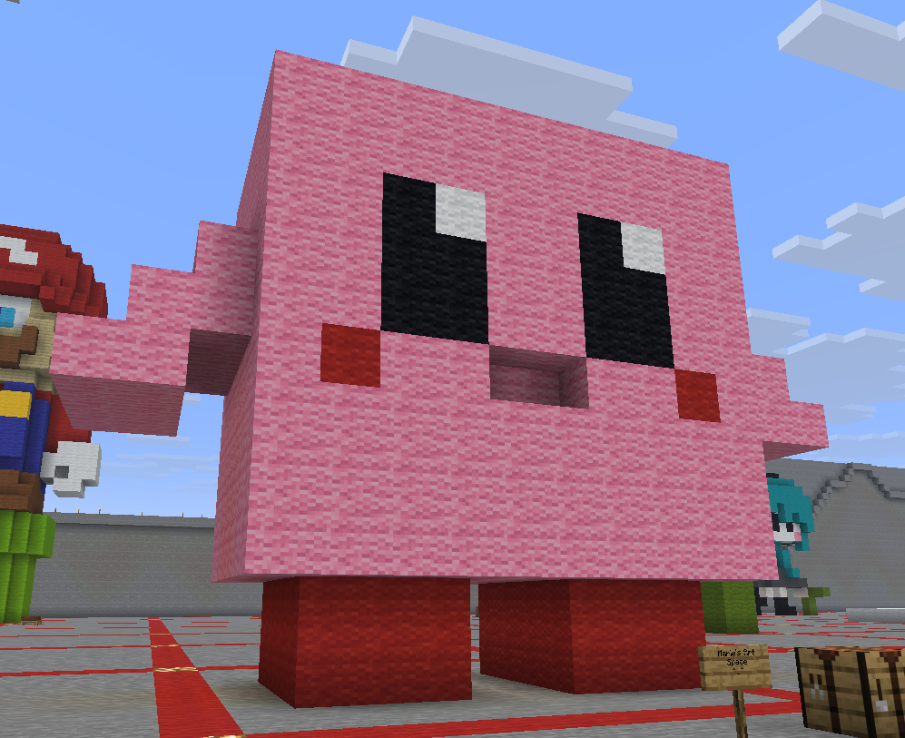

Minecraft
When my professor said that we were going to have a Minecraft server that we were gonna play in class, it made me so happy since it was my favorite game since childhood (and I haven't played the game in forever :")). Below is the Kirby I built for the 3D print assignment.
